State Council of Educational Research and Training (SCERT), Kerala
2024
Social Science
Part II
Standard VII
Government of Kerala
Department of General Education
Prepared by
Page 1

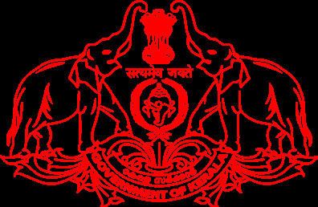
Page 2

Prepared by
State Council of Educational Research and Training (SCERT)
Poojappura, Thiruvananthapuram 695012, Kerala
Website : www.scertkerala.gov.in, e-mail : scertkerala@gmail.com
Typeset and design by : SCERT
Printed at : KBPS, Kakkanad, Kochi-30
© Department of General Education, Government of Kerala
7
Jana-gana-mana adhinayaka, jaya he
Bharatha-bhagya-vidhata.
Punjab-Sindh-Gujarat-Maratha
Dravida-Utkala-Banga
Vindhya-Himachala-Yamuna-Ganga
Uchchala-Jaladhi-taranga
Tava subha name jage,
Tava subha asisa mage,
Gahe tava jaya gatha.
Jana-gana-mangala-dayaka jaya he
Bharatha-bhagya-vidhata
Jaya he, jaya he, jaya he,
Jaya jaya jaya jaya he!
The National Anthem
India is my country. All Indians are my brothers and sisters.
I love my country, and I am proud of its rich and varied
heritage. I shall always strive to be worthy of it.
I shall give respect to my parents, teachers and all elders and
treat everyone with courtesy.
I pledge my devotion to my country and my people. In their
well-being and prosperity alone lies my happiness.
PLEDGE
Social Science
Page 3

Dear Students,
Social Science is the branch of study that deals with social life and
educational development. It can guide our society forward based on past
experiences, help us overcome difficult circumstances and contribute
effectively to shaping new eras and environments. The study of Social
Science enables us to implement the fundamental rights set forth by the
Constitution on a scientific basis and explore possibilities to nurture the
country's economy.
To foster an inclusive mindset, we must have a clear understanding
of society, considering all marginalised social groups and preserving
the high cultural and secular traditions of the nation. A Social Science
student must be able to identify the geographical features and recognise
the need to conserve nature and ensure agricultural prosperity.
I hope that Social Science textbook, Class 7- Part II, will be an asset
and will contribute significantly to your success in life by incorporating
such progressive perspectives as proposed by the Revised Curriculum
Framework of Kerala, 2023.
This textbook is sure to help you make our society more dynamic and
uphold human values.
With love and regards,
Dr. Jayaprakash R. K.
Director
SCERT, Kerala
Page 4

Textbook Development Team
Advisor
Dr. K. N. Ganesh
Chairman, Kerala Council for Historical Research
Chairperson
Dr. Baiju K. C.
Vice Chancellor (In-Charge)
Central University, Kasaragod
Anoop K. P.
P.M.S.A., P.T.H.S.S. Kakkove, Malappuram
M. Johnbai
M.V.H.S.S. Arumanoor, Thiruvananthapuram
Johnson T. Y.
C.S.I.H.S.S. For Deaf, Valakam
Krishnan Kuriya
AEO (Rtd.), Kannur South
Musthafa Mattathoor
Teacher Educator, Govt. Institute of Teacher
Education, Malappuram
Nisha M. S.
P.H.S.S., Mezhuveli, Pathanamthitta
Reshmi Reghunath
HSST English, Govt. V&HSS Manacaud
Seema Nair K. S.
HSST English, GHSS Vellinezhy
Chandrasekharan P.
NVT English (Rtd.), BNV VHSS Thiruvallam
T. S. Nisha
S.N.V.U.P.S. Maruthamanpally, Kollam
Premjith Sureshbabu
Artist
Priya S. S.
G.B.H.S.S., Mithirmala, Thiruvananthapuram
Rajan P. P.
Trainer, B.R.C., Malappuram
Rajan Kulangara
Irigannoor H.S.S., Vadakara, Kozhikode
Shanlal A. B.
HSST Geography, P.N.M. Govt. HSS
Koonthalloor, Chirayinkeezhu
Devi V.
NVT English, GVHSS Kumily
Dr. V. S. Visak
NVT English, Govt. VHSS Parassala
Experts
Members
English Translation
Dr. P. P. Abdul Razak
Associate Professor (Rtd.),
Department of History,
P.S.M.O. College, Thirurangadi
Dr. Anish V. R.
Assistant Professor,
Department of Political Science,
S.A.R.B.T.M. Govt. College, Quilandy
Dr. Anil D.
Research Officer, SCERT Kerala
Academic Coordinator
State Council of Educational Research and Training (SCERT)
Vidhyabhavan, Poojappura, Thiruvananthapuram 695 012
Dr. Nandakumar B.V.
Assistant Professor,
S.N. College Varkala,
Thiruvananthapuram
Page 5


8. Power to the People........................................................................119-131
9. Maps and Technology to Know the Earth........132-151
10. Budget: The True Record of Development.....152-165
11. Against Discrimination..............................................................166-179
12. The Foundation Stones of History..............................180-198
Additional Reading:
Not subject to evaluation
Learning Activities
Let's Read
Extended Activities
Certain icons are used in this
textbook for ease of study
Content
Page 6

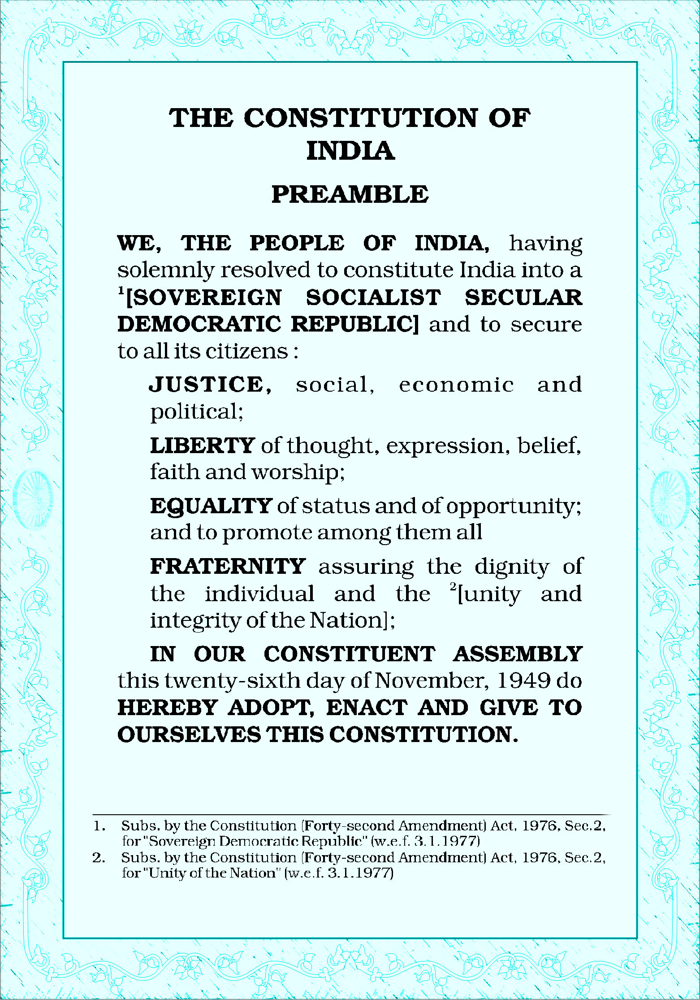
Page 7
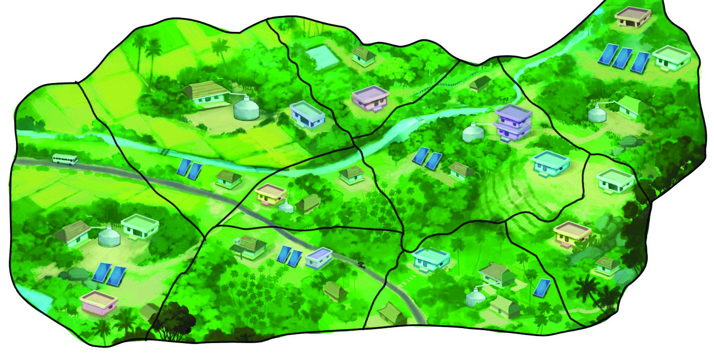
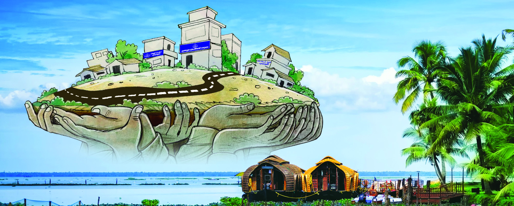
The Pookkottumala Model of Development
Pookkottumala:
The eleventh ward
will be declared a
filament-free zone
today
Pookkottumala:
Pachathuruth Project
to be inaugurated in
the fifth ward today
The efforts of the
Janakeeya Samithi
has reaped the result.
Pookkottumala will
not be an arid village
anymore
Solar parks in
each ward
Pookkottumala:
The first ward
will be
garbage-free
hereafter
Fig. 8.1
You might have noticed the headlines about Pookkottumala village. Pookkottumala
is a village that accomplished sustainable development with the participation of the
people. Several developmental activities like self-sufficiency in food, development
of watersheds, greenery in all wards, arid-free village, Jalasamridhi Project and
filament-free village have been implemented in various wards of Pookkottumala
with the assistance and support rendered by the local self-government institutions.
Power to the People
8
Page 8
120
- Part 2
VII
Social Science
The active participation of the people in grama sabhas, the planning and timely
intervention of officers, and the commitment of the people have contributed to the
development of Pookkottumala Panchayat in this way.
What are the factors that have become the driving force behind the developmental
progress of Pookkottumala village?
There may be some developmental activities that were planned and executed
through grama sabhas and ward sabhas in your region as well. Find out and list
them with the help of your teacher.
l construction of roads
l .………………………………………………
l .……………………………………………….
l .………………………………………………..
When You Get to Know Grama Sabhas/Ward Sabhas Closely
RED
10:01
100%
Nivin
Today 10:00
Like
100 Comments
Comment
You and 99 others
It was only recently that I visited the grama sabha of my ward for
the first time. I could understand how the public could participate
in the discussions regarding the development of the place, and to
express opinions and in the decision-making processes. A grama
sabha is a committee that includes all who are enlisted in the
voters’ list of each ward in every grama panchayat. In the cities, it
is known as ward sabha. It was a new piece of information for me
that in grama sabhas the day-to-day problems of people would
also be discussed apart from the discussion on the development
of the locality. The grama sabha is convened at least once in
three months. The Panchayat President reminded us that the
grama sabha is the platform for ensuring equality of status and
equal rights among citizens. The ward member, who is also the
convenor, stated that grama sabhas provide opportunities for
the public to participate in the democratic process and to take
decisions. I understood that grama sabhas are places that require
our active participation.
Page 9
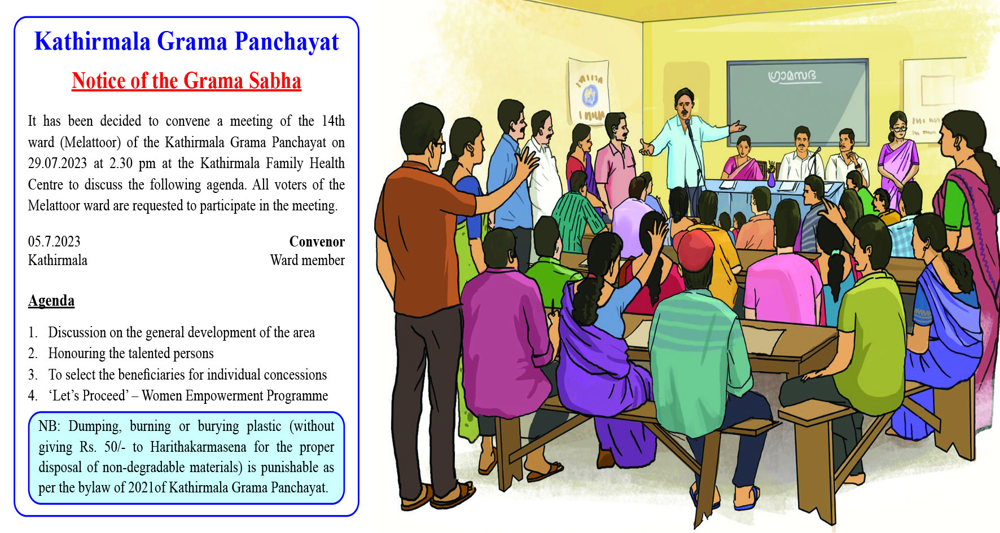
121
Power to the People
Find out the following from Nivin’s post.
What is referred to in the post?
What are discussed in grama sabhas?
Who presides over a grama sabha?
What is the system in cities which is equal to grama sabhas?
Who is the convenor of the grama sabha?
Fig. 8.2
Have you seen the notice and the picture given above? These are the pictures of the
grama sabha and the notice for convening it. Find out and list what activities are
going on in the grama sabha from the notice.
l
regional developmental activities – discussion and planning
l
l
Consolidate the facts that you have understood on the functioning of
grama sabhas and prepare a note.
Let’s Convene a Class Sabha
Shall we organise a model ‘class sabha,’ imagining your school as a grama panchayat
and your class as a ward? Let the class leader be the representative of the ward.
Page 10

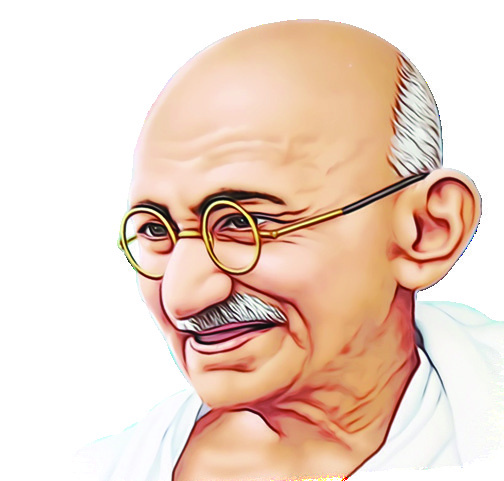
122
- Part 2
VII
Social Science
First of all, let us prepare a notice to invite members for the class sabha. What are
the details that have to be furnished in the notice? Which are the developmental
activities to be discussed in the class sabha?
l the changes for making the classroom child-friendly
l activities for the cleanliness of the school premises
l
l
l
Prepare a notice with the help of the teacher and organise the class
sabha.
When Villages Become the Foundation
Fig. 8.3
Gandhiji's Dream
My idea of village Swaraj is that it is a complete republic, independent of its
neighbours for its own vital wants and yet interdependent for many others
in which dependence is a necessity. Thus every village's first concern will be
to grow its own food crops and cotton for its cloth. It should have a reserve
for cattle, recreation and playground for adults and children. Then if there is
more land available, it will grow useful money crops...
Harijan, 26-7-1942. Gandhi sahitya samgraham
Find out the vision of Gandhiji concerning the development of villages.
l attain self-sufficiency in catering to the major needs of the village.
l
l
l
l
Page 11
123
Power to the People
Gandhiji believed that the soul of India lies in the villages and that the country can
make progress only through the development of the villages. Villages are the basic
units of democratic governance. Therefore, the welfare of people increases with
the increase of the power of the panchayat. Gandhiji considered grama swaraj as
self-governing body. Decentralisation of power is the means to realise the concept
of grama swaraj, as envisioned by Gandhiji. The concept of grama swaraj gets
materialised when power is decentralised to the people.
When Power is Decentralised
Grama panchayat
intervenes:
Construction of the
bridge completed
immediately
People take initiative:
Shade blooms
on the roadside
The Ward Development
Committee becomes
active: Drinking water
available for all
Farmers’ Collective Alive:
Reaping machines set for
the fields
Special committee in Grama
Sabha to identify the deserving:
‘Swapna Bhavanam Project’
becomes a reality
People’s participation
increases: Village roads
set for service
Hope you have identified, from the collage given above, the regional developmental
projects that attained success through public participation.
Democracy becomes meaningful when power is decentralised to all people and
not simply vested with some. Thus, in a political or administrative system, the
transfer of power legally to the people to take decisions and execute them is called
decentralisation of power.
Page 12


124
- Part 2
VII
Social Science
Centralisation of Power
The power to take decisions and execute them in administrative
matters is centred on some people is called centralisation of power.
Here, the common people comparatively do not get the opportunity to become
a part of administrative affairs.
Decentralisation of Power: Features
Decentralisation
of power
Importance
to regional
development
Common people
have more power and
participation in the
administration
Development
of the local economy
Women and the
marginalised get
leadership and
administrative
experience
Developmental needs
get prioritised
Have you noticed the concept map given above? Discuss the features
of decentralisation and write a description.
Decentralisation Over the Years…
The panchayat was a rural administrative arrangement that had existed in
our country since ancient times. They were the focal points of rural life.
The word ‘Panchayat’ was formed from the Sanskrit words ‘pancha’ (five)
and ‘ayat’ (meeting). With the dominance of the British rule, the panchayat
system became weakened. However, it was the reforms introduced by Lord
Rippon in 1882 that revived the local self-government system. When the
Govt of India Act came into existence in 1935, the local self-government
bodies were given more power, and they were restructured.
Page 13
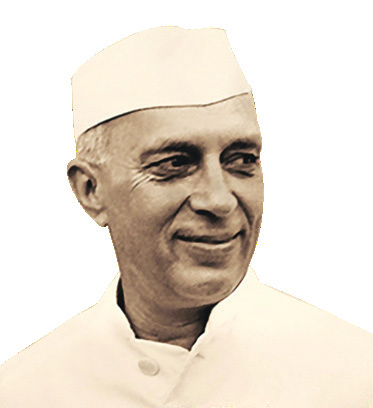
125
Power to the People
Decentralisation in the Constitution
The formation of panchayats is referred to in Article 40 as part of the Directive
Principles in the Constitution of India. However, the absence of a strong
local administrative system adversely affected rural development in India.
Several committees were constituted to resolve this and to strengthen the local
self-government system. The prominent among them are the committees formed
under the leadership of Balwantrai Mehta and Ashok Mehta.
The Recommendations of
Balwantrai Mehta Committee (1957)
The Recommendations of
Ashok Mehta Committee (1978)
l The three-tier panchayat system
– Grama Panchayat, Panchayat
Committee, District Parishad
l The power for planning and
execution to be given to Panchayat
Committees and supervision and
organisation for District Parishad
l Direct election in Grama Panchayats
l Indirect election in District Parishad
and Panchayat Committee
l The two-tier system – Mandal
Panchayat, District Parishad
l The District Parishad shall have
the charge over the district-level
planning. Mandal panchayats are in
charge of the villages.
l Constitutional validity for panchayat
institutions
l Reservation for Scheduled Caste –
Scheduled Tribe
Conduct a panel discussion, including more details about the two
committees given above.
Its beginning
The Panchayati Raj system came into existence first in
Rajasthan as per the recommendations of the Balwantrai Mehta
Committee. Prime Minister Jawaharlal Nehru inaugurated the
project in Nagaur district in Rajasthan on October 2nd,1959.
The Panchayati Raj system came into existence in Andhra
Pradesh, Tamil Nadu and West Bengal the same year.
Fig. 8.4
Page 14

126
- Part 2
VII
Social Science
Constitutional Amendment
The delay in executing the recommendations of various committees regarding
the decentralisation of power throughout the country became an obstacle to the
strengthening of local self-government bodies and the formation of a uniform
structure there. Therefore, it was decided to give constitutional powers to the local
self-government bodies. The local self-government bodies got more powers with
the 73rd and 74th amendments of the Constitution in 1992. The Panchayati Raj Act
came into existence through the 73rd Amendment, whereas the Nagarpalika Act
was introduced with the 74th Amendment.
73rd Constitutional Amendment
Panchayati Raj System
74th Constitutional Amendment
Nagarpalika System
Formation of grama sabhas
Formation of ward sabhas
Tenure of administration – five years
Tenure of administration – five years
Reservation for the Scheduled Caste
and the Scheduled Tribe
Reservation for the Scheduled Caste
and the Scheduled Tribe
Reservation for Women
Reservation for Women
The election charge was given to the
State Election Commission
The election charge was given to the
State Election Commission
Finance Commission once in five years Finance Commission once in five years
Three-tier Panchayat system – Grama
Panchayat, Block Panchayat, District
Panchayat
Two types of Urban Local Self
Government bodies
Nagar Panchayat, Municipal Council
(Municipality/Corporation in Kerala)
Conduct a quiz in the class based on the 73rd and 74th amendments
of the Constitution.
l
In which name is the rural administrative decentralisation system known in India?
l
What is the basic unit of the Panchayati Raj system?
l
.........................................................................................................
l
.........................................................................................................
Page 15

127
Power to the People
Find out and list the recommendations of the Balwantrai Mehta
Committee and Ashok Mehta Committee that were included in the
73rd and 74th amendments of the Constitution.
l the three-tier panchayat system
l
l
l
The Local Self-Government Institutions in Kerala – Structure
Municipal Council
(Municipality)
Municipal
Corporation
(Corporation)
Panchayati Raj
System
Nagarpalika
System
District Panchayat
Block Panchayat
Grama Panchayat
Find out the details of your local self-government institutions.
l Grama Panchayat
l Ward member of the Grama Panchayat
l President of the Grama Panchayat
l Block Panchayat
l President of the Block Panchayat
l District Panchayat
l President of the District Panchayat
l Municipality
l Councillor of the Municipality
Page 16

128
- Part 2
VII
Social Science
l Chairperson of the Municipality
l Corporation
l Councillor of the Corporation
l Mayor
People’s Planning (Janakeeyasuthranam) in Kerala
After the 73rd and 74th amendments of the Constitution, the process
of decentralisation of power introduced in Kerala in 1996 is known as
‘People’s Planning’ (Janakeeyasuthranam). The ‘People’s Planning’
system has given more power and responsibilities to the local
self-government system which also ensured more officials,
institutions and funds to implement them. As a result of these
constitutional amendments, 33% reservation is accorded to
women in the local self-government systems. Further, as
per the amendment of the Panchayati Raj Act 2005, the representation of
women in local self-government bodies was elevated to 50%. 10% of the
total plan fund of local self-government bodies has been allocated to projects
exclusively meant for women. Kerala, thus, became a model for the country
through the effective implementation of the decentralisation process.
Various Responsibilities
Look at the board that has been displayed in front of the local self-government
institutions. What are the responsibilities and services that can be availed from the
local self-governments?
register births/deaths
collect statistical data
supervision and responsibility of primary schools
mother and child development
sanction permission for building construction
conservation of traditional water resources
garbage treatment
granting licence to domestic dogs
Page 17
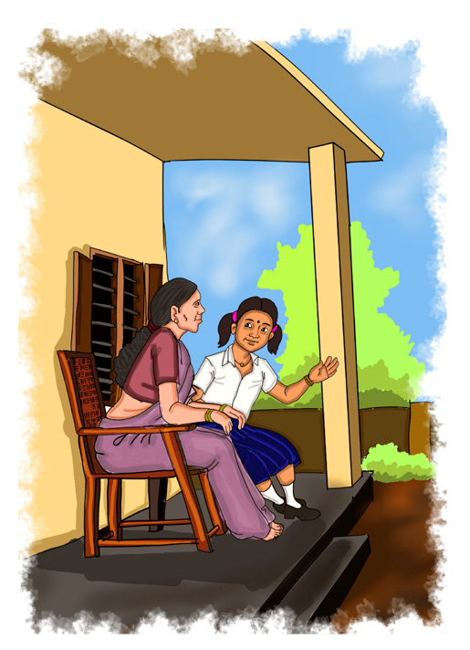

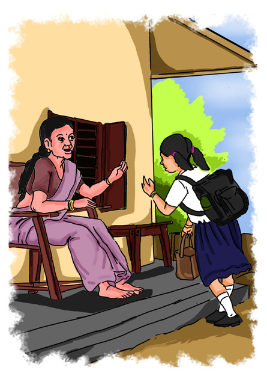
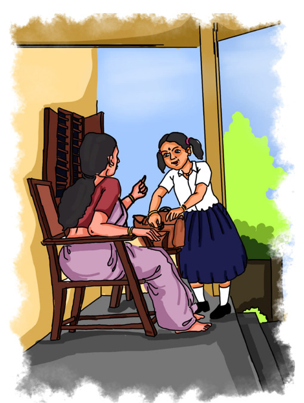
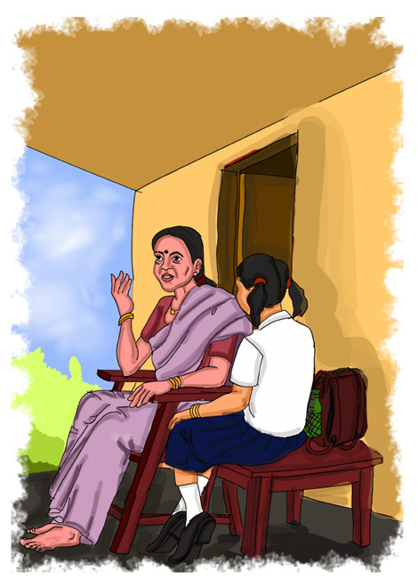
129
Power to the People
Fig. 8.7
Which are the services that your family availed from the local self-governments?
Discuss.
Prepare a questionnaire to interview the people’s representatives
in your area to know more about the responsibilities of local
self-government institutions.
Income through Different
Sources
Mizhi: Grandma, today we have
learnt about the responsibilities of
the panchayat.
Grandma: Aha! What have you
learnt?
Mizhi: Preventing the spread
of
communicable
diseases,
conserving
water
resources,
registering births and deaths, and more. Grandma, you
were also formerly a Panchayat President. Can you tell me where the panchayat
gets its revenue to do all these?
Grandma: Smart girl! It’s a good question. The panchayat
has different sources of income. For example, there are
funds and grants from the State and Central governments.
Besides, panchayats get revenue from building tax,
professional tax, entertainment tax and the like.
Mizhi:
Grandma,
my
dad
remitted the fee for a building
permit the other day. Doesn’t that
also come under the revenue of
the panchayat?
Grandma: Yes, that also comes under it. The fee from
permits and registration, the user fee from bus stands,
markets and playgrounds owned by the panchayat and
the fine that is levied by the panchayat also come under
its revenue.
Mizhi : Aha! So there are several sources of income!
Fig. 8.5
Fig. 8.6
Fig. 8.7
Page 18


130
- Part 2
VII
Social Science
Grandma: Yes. But don’t forget that the revenue will be different for different
panchayats based on the nature of the locality. Doesn’t the panchayat need sufficient
income to make regional development possible? Besides, the different types of
loans that are approved by the government, the shares from beneficiaries and the
contributions that are accepted based on certain conditions come under the revenue
of the panchayat.
Complete the list by identifying the different sources of revenue of
local self-government bodies from the conversation given above.
l
various types of taxes
l
l
l
Obstacles and Challenges
Though Kerala has made several achievements through decentralisation of power
including ‘People’s Planning,’ many challenges are also there. The relevant areas
of a seminar paper prepared by Milan on the topic ‘Local Self-Government
Institutions and Challenges’ are given below.
Challenges
Faced by Local
Self-Government
Institutions
When we complete the quarter-
Century of decentralisation,
instead of simply highlighting the
achievements only, it is essential
to identify the limitations, and
do what is required to act more
effectively. The major challenges
and problems faced by local
self-government institutions
are given below.
l A condition in which the plan
share is not available on time
l A situation in which
decentralisation is not executed
completely
l The less participation of people
in grama sabhas
l Dip in panchayat’s own
revenue in the rural sector
l Inadequacy of infrastructure
Page 19


131
Power to the People
Prepare a brief note on the local self-government institution to which
you belong and present it in the class.
‘If I become a Panchayat President/Chairperson of the Municipality/
Mayor of the Corporation’ – Present your ideas in the class.
Democracy becomes meaningful when the people too participate in the
administrative process. This ensures decentralisation. This is also a process that
accommodates the people of all sections of society in the administrative process.
Therefore, it is essential to proceed further by facing and solving the challenges of
decentralisation to strengthen democracy.
Extended Activities
l Interview with the people’s representative to learn about the activities of local
self-government institutions.
l Conduct a field trip to the panchayat/municipality/corporation office to learn
about the functioning of local self-government institutions directly and prepare
a digital documentation.
l Observe the grama sabha/ward sabha of your area, collect information and
prepare a report.
l Conduct a debate on the topic of ‘Women’s Reservation in the 73rd and 74th
constitutional amendments.’
l Prepare a Class Development Plan by including the ideas on development
which were put forward while the ‘class sabha’ was conducted. Present it in the
school parliament. Then, release it in the school assembly in the presence of the
members of the School Development Committee.